1. Fuentes de datos: búsqueda, catálogo e integración
Entrega E1 - Arquitectura del Data Warehouse
Punto de partida: preguntas de E0
Las preguntas priorizadas en E0 reciben un identificador que se usa en toda la entrega.
| ID | Pregunta de E0 | Tarea de minería |
|---|---|---|
| P1 | ¿Qué combinaciones de línea, estación y día de la semana concentran los picos de afluencia, y qué tan lejos están de su nivel base? | EDA / estacionalidad |
| P2 | ¿Es posible anticipar con al menos 24 h la afluencia diaria por estación y clasificar los días de alta demanda? | Regresión + clasificación |
| P3 | ¿Cuántos perfiles de demanda existen entre las estaciones y qué alternativas (Metro o Metrobús) hay para cada perfil? | Clustering |
| P4 | ¿Qué días son anomalías y qué proporción se explica por eventos identificables? | Detección de anomalías |
| P5 (reserva) | ¿El Metrobús absorbe demanda cuando una línea del Metro suspende servicio? | Correlación / cambio de nivel |
1.1 Proceso de búsqueda
La búsqueda combinó una herramienta de investigación con IA (documentada en Uso de IA) con consultas directas a los portales. Todo lo que propuso la herramienta se abrió y se comprobó en la fuente original antes de entrar al catálogo.
| Fecha | Herramienta o portal | Consulta | Resultado |
|---|---|---|---|
| 2026-10-01 | API CKAN del Portal de Datos Abiertos CDMX (package_search) |
afluencia metrobus, estaciones metro, gtfs |
6 conjuntos de SEMOVI relevantes (C1–C6, C12) |
| 2026-10-01 | API CKAN (datastore_search_sql) |
Perfilado de F1 y F2: rango de fechas, filas por día, valores distintos de línea y estación, ceros | Hallazgos de la sección 1.4 |
| 2026-10-01 | Búsqueda web | INEGI Estadística de Transporte Urbano de Pasajeros mensual Metro |
ETUP de INEGI (C9) |
| 2026-10-01 | Nager.Date (API REST) | /api/v3/PublicHolidays/{año}/MX, 2010–2026 |
156 registros de festivos (F4) |
| 2026-10-01 | Open-Meteo Historical Weather API | Precipitación y temperatura diaria, CDMX, 2010–2026 | 6,056 días sin huecos (F5) |
| 2026-10-01 | Catálogo bigquery-public-data |
Clima diario con estaciones en México | NOAA GSOD (C10), no incorporado |
| 2026-10-01 | Documentación de Waze for Cities | Acceso a datos de tráfico | Sin API pública (C11), descartado desde E0 |
1.2 Candidatas evaluadas y criterio de selección
Una fuente entra al catálogo solo si cumple los seis criterios:
- Grano compatible: diario, y por estación o por línea.
- Cobertura: incluye 2022–2026, que es la ventana del modelo operativo definida en E0 (riesgo R5).
- Licencia abierta que permita el uso y la redistribución académica.
- Acceso reproducible sin credenciales: descarga directa o API sin llave.
- Llave de integración con las demás fuentes (fecha, línea o estación).
- Responde al menos una pregunta P1–P5.
| # | Candidata | Dueño | Tipo | Decisión | Motivo |
|---|---|---|---|---|---|
| C1 | Afluencia diaria del Metro (simple) | SEMOVI | CSV en portal | ✅ F1 | Única fuente con grano estación-día; núcleo del DW |
| C2 | Afluencia diaria del Metrobús (simple) | SEMOVI | CSV en portal | ✅ F2 | Único dato de demanda del modo alterno (P3, P5) |
| C3 | GTFS estático de la CDMX | SEMOVI | ZIP de CSV (estándar GTFS) | ✅ F3 | Catálogo canónico de estaciones y líneas con identificador y coordenadas |
| C4 | Días festivos de México (Nager.Date) | Proyecto Nager.Date | API REST JSON | ✅ F4 | Festivos para dim_fecha (P1, P2, P4) |
| C5 | Clima histórico diario (Open-Meteo) | Open-Meteo | API REST CSV/JSON | ✅ F5 | Lluvia y temperatura para explicar anomalías (P4) y como variable de P2 |
| C6 | Afluencia diaria del Metro (desglosada por tipo de pago) | SEMOVI | CSV en portal | ❌ | Mismo grano que F1 más tipo_pago, pero solo desde 2021 y ninguna pregunta usa el medio de pago: crearía una dimensión huérfana |
| C7 | Afluencia preliminar en transporte público | SEMOVI | CSV en portal | ❌ | Cifras preliminares, agregadas por organismo, con números como texto ("11,238") y solo desde 2020-03; redundante con F1 y F2 |
| C8 | Datos de movilidad (histórico COVID-19) | SEMOVI | CSV en portal | ❌ | Índices relativos, no conteos, y solo para el periodo de pandemia |
| C9 | Estadística de Transporte Urbano de Pasajeros (ETUP) | INEGI | Tabulados / PDF mensual | ❌ | Grano mensual por sistema, no por estación; útil en E2 solo para validar totales |
| C10 | NOAA GSOD (bigquery-public-data.noaa_gsod) |
NOAA | Dataset público de BigQuery | ❌ | Duplica la necesidad que cubre F5 y su consulta consume créditos; no se verificó la cobertura de la estación de la CDMX |
| C11 | Waze for Cities | Google / Waze | Feed para socios | ❌ | Sin API pública y con prohibición de republicar (riesgo R7 de E0) |
| C12 | Ubicación de líneas y estaciones del Metro | SEMOVI | SHP / KMZ | ❌ | Mismo contenido geográfico que F3, pero en un formato que BigQuery no carga directamente y sin identificador de parada |
El catálogo cumple el requisito de dos tipos distintos: archivos de portal abierto (F1, F2, F3) y API REST (F4, F5).
1.3 Catálogo de fuentes verificadas
F1 · Afluencia diaria del Metro CDMX (simple)
| Campo | Valor |
|---|---|
| Nombre y dueño | Afluencia Diaria del Metro (Simple) · Secretaría de Movilidad (SEMOVI) |
| URL y acceso | https://datos.cdmx.gob.mx/dataset/afluencia-diaria-del-metro-cdmx · descarga directa de CSV; también por API CKAN (resource_id 0e8ffe58-28bb-4dde-afcd-e5f5b4de4ccb) |
| Formato y tamaño | CSV, 59.9 MB, 1,180,920 filas; columnas fecha, anio, mes, linea, estacion, afluencia |
| Grano | Una fila por estación-línea por día (195 filas exactas cada día) |
| Cobertura | 2010-01-01 a 2026-07-31 (6,056 días); 12 líneas, 195 estaciones-línea; actualización mensual (última: 2026-08-28) |
| Licencia y restricciones | CC-BY-4.0-ESP, con atribución. Sin datos personales. El portal advierte actualizaciones retroactivas |
| Llaves de integración | fecha (ISO); linea + estacion (texto, requiere normalización) |
| Pregunta(s) de E0 | P1, P2, P3, P4, P5 |
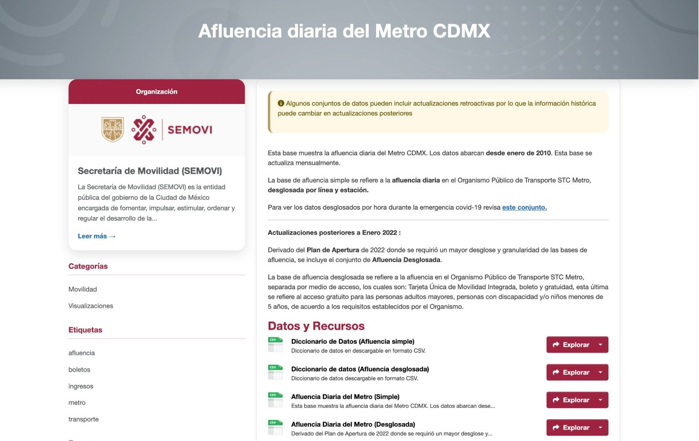
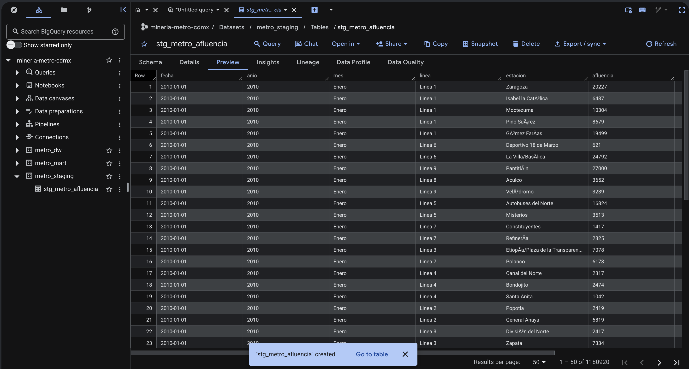
F2 · Afluencia diaria del Metrobús CDMX (simple)
| Campo | Valor |
|---|---|
| Nombre y dueño | Afluencia Diaria del Metrobús (Simple) · SEMOVI |
| URL y acceso | https://datos.cdmx.gob.mx/dataset/afluencia-diaria-de-metrobus-cdmx · descarga directa de CSV; API CKAN (resource_id f7943c47-835d-4078-93ea-906f64b72f3b) |
| Formato y tamaño | CSV, 2.1 MB, 53,732 filas; columnas fecha, anio, mes, linea, afluencia |
| Grano | Una fila por línea de Metrobús por día. No hay detalle por estación |
| Cobertura | 2005-07-26 a 2026-07-31; 7 líneas; actualización mensual |
| Licencia y restricciones | CC-BY-4.0-ESP. Sin datos personales |
| Llaves de integración | fecha; linea (texto, con variantes de mayúsculas) |
| Pregunta(s) de E0 | P3, P5 |
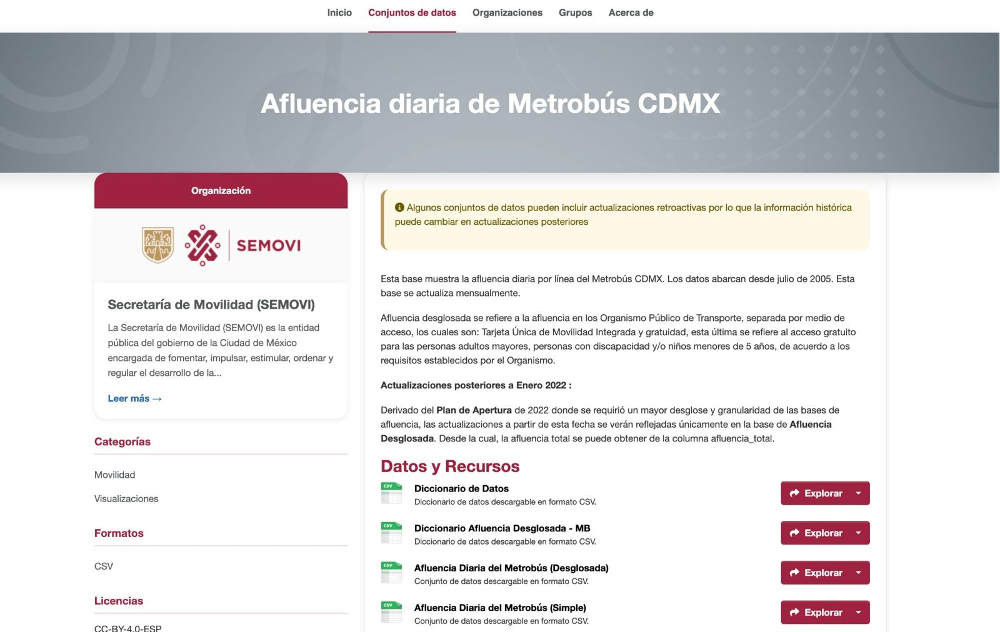
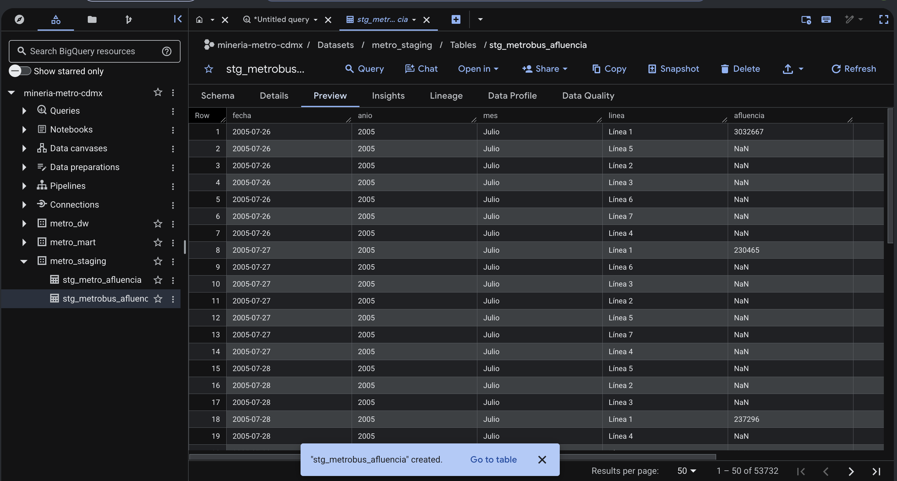
F3 · GTFS estático de la Ciudad de México
| Campo | Valor |
|---|---|
| Nombre y dueño | GTFS estático (General Transit Feed Specification) de la Ciudad de México · SEMOVI |
| URL y acceso | https://datos.cdmx.gob.mx/dataset/gtfs · descarga directa de ZIP; se cargan stops.txt y routes.txt |
| Formato y tamaño | ZIP de 2.4 MB con 8 archivos CSV; stops.txt 1.0 MB (11,362 paradas de todos los sistemas), routes.txt 21.6 KB |
| Grano | stops.txt: una fila por parada. El Metro (agencia METRO, prefijo B_02) tiene 195 paradas, una por estación-línea. routes.txt: una fila por ruta |
| Cobertura | Foto de la red al 31 de octubre de 2022, según la descripción del conjunto (el portal registra una modificación de metadatos el 2026-08-28, pero el contenido no cambió de versión). Es un catálogo estático, sin historia; incluye Metro, Metrobús y otros 8 sistemas |
| Licencia y restricciones | CC-BY-4.0-ESP. Sin datos personales |
| Llaves de integración | stop_id (p. ej. B_0200L1-PANTITLAN contiene la línea); stop_name; route_short_name (1…9, A, B, L12); coordenadas |
| Pregunta(s) de E0 | P1, P3, P4 (catálogo de estaciones y líneas) |
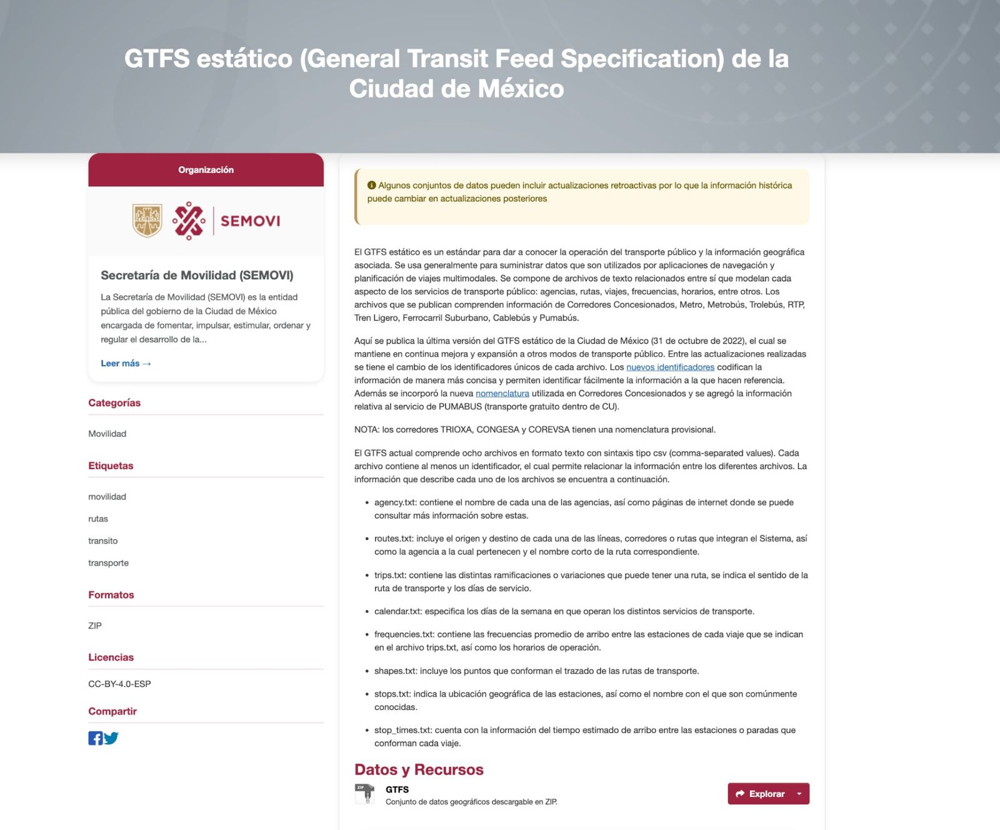
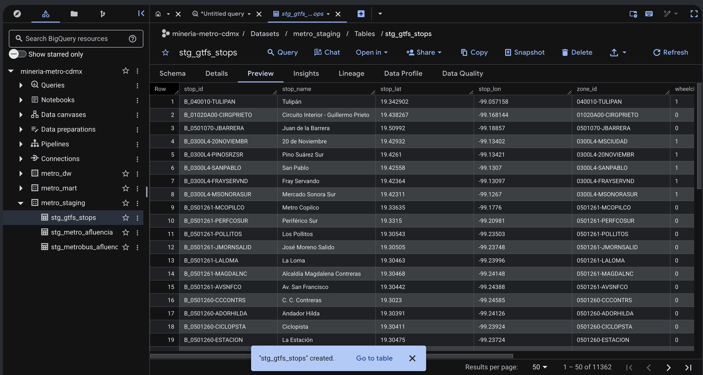
F4 · Días festivos de México (Nager.Date)
| Campo | Valor |
|---|---|
| Nombre y dueño | Public Holidays API · proyecto Nager.Date (código abierto, licencia MIT) |
| URL y acceso | https://date.nager.at/api/v3/PublicHolidays/2025/MX · API REST sin llave, una llamada por año |
| Formato y tamaño | JSON; 156 registros para 2010–2026 (≈ 29 KB); campos date, localName, name, global, types |
| Grano | Una fila por día festivo |
| Cobertura | Cualquier año; México a nivel nacional |
| Licencia y restricciones | Uso libre de la API. Incluye días que no son de descanso obligatorio (Jueves y Viernes Santo con tipo Bank/School) y algunos festivos desplazados que no corresponden a la ley (ver 1.5) |
| Llaves de integración | date (ISO) |
| Pregunta(s) de E0 | P1, P2, P4 |
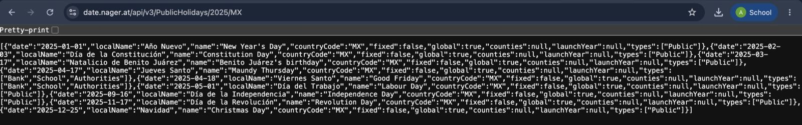
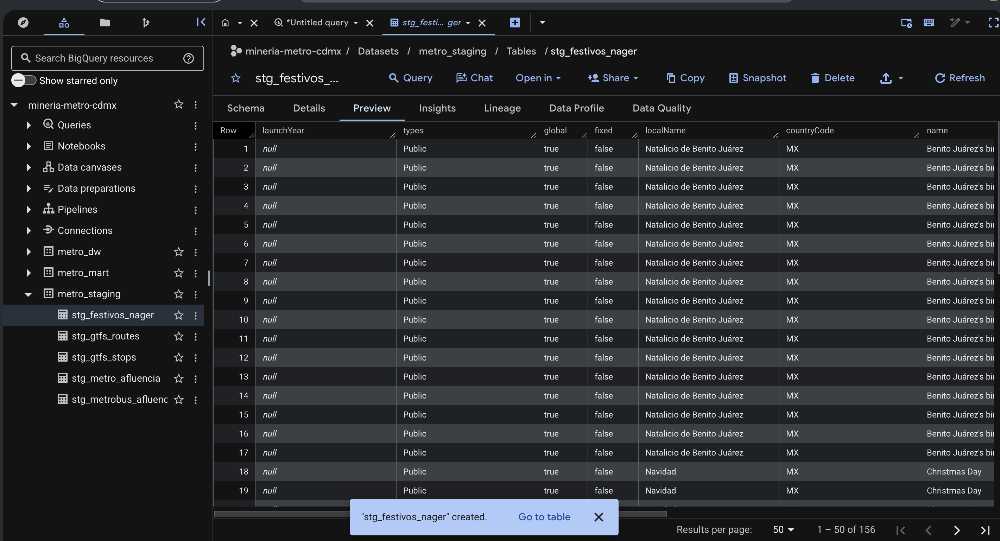
F5 · Clima histórico diario (Open-Meteo)
| Campo | Valor |
|---|---|
| Nombre y dueño | Historical Weather API · Open-Meteo |
| URL y acceso | https://archive-api.open-meteo.com/v1/archive · API REST sin llave; parámetros latitude=19.4326&longitude=-99.1332&daily=precipitation_sum,rain_sum,temperature_2m_max,temperature_2m_min&timezone=America/Mexico_City&format=csv |
| Formato y tamaño | CSV, 187 KB, 6,056 filas para 2010-01-01 → 2026-07-31; 4 líneas iniciales de metadatos |
| Grano | Una fila por día para un punto de malla (19.4376 N, −99.1072 O, 2,230 m) |
| Cobertura | Desde 1940 hasta hace pocos días; reanálisis, por lo que valores recientes pueden revisarse |
| Licencia y restricciones | CC BY 4.0, con atribución a Open-Meteo |
| Llaves de integración | time (fecha ISO en hora local de la CDMX) |
| Pregunta(s) de E0 | P2, P4 |
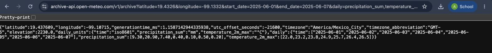
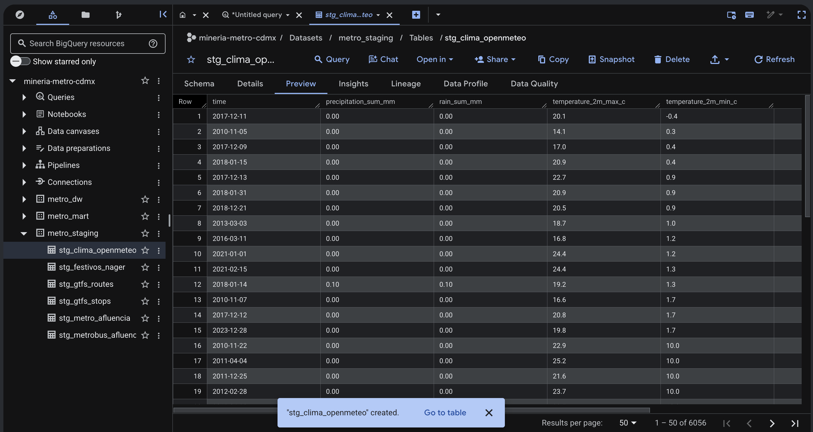
1.4 Lo que encontramos al abrir los datos
Antes de diseñar el esquema perfilamos F1 y F2 completas con la API del portal. La consulta para repetir cada hallazgo en BigQuery está en sql/01_perfilado_staging.sql.
- F1 es un panel completo: exactamente 195 filas por día durante los 6,056 días. No faltan estación-días: lo que hay son ceros.
- 62,025 registros en cero (5.3 %), casi todos estructurales:
- Línea 12 antes de su inauguración: primer valor distinto de cero el 2012-11-05.
- Línea 12 cerrada desde el 2021-05-04, día siguiente al colapso, con reapertura escalonada en 2023 y enero de 2024.
- Línea 1 durante la modernización de 2022–2025, el riesgo R3 de E0.
- Codificación inconsistente: entre 2021-01-01 y 2023-05-31 el campo
lineacambia deLinea 1aLÃnea 1. Es texto UTF-8 leído como Latin-1. Por eso hay 24 valores de línea para 12 líneas. Lo mismo ocurre en nombres de estación (Pantitlán,Gómez FarÃas), incluso fuera de ese periodo. El riesgo R6 de E0 se confirmó. - F2 marca con el texto
'NaN'las fechas en que una línea aún no existía: 17,227 filas. En 2023 los nombres aparecen en minúsculas (linea 1).
Verificación en BigQuery
Después de cargar staging, el equipo repitió el perfilado en BigQuery con sql/01_perfilado_staging.sql. Las 8 consultas se ejecutaron sin error y cada cifra coincide con la que obtuvimos en el portal.
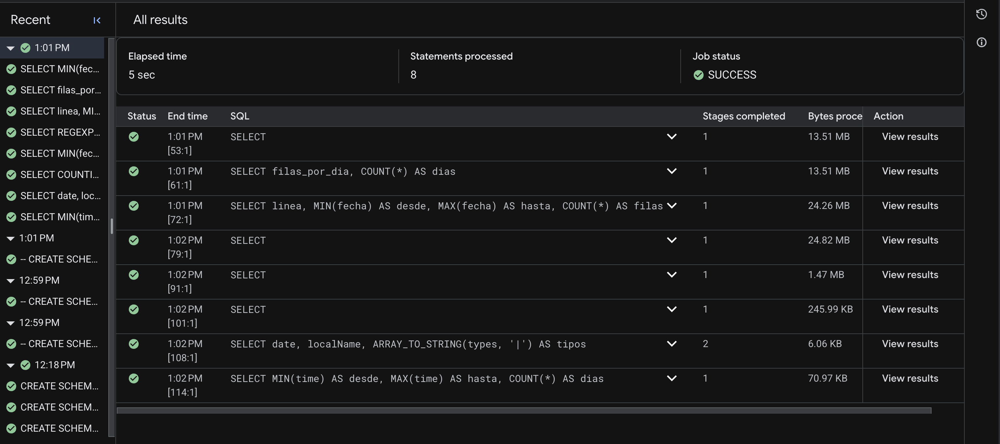
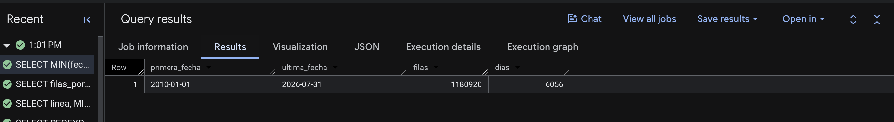
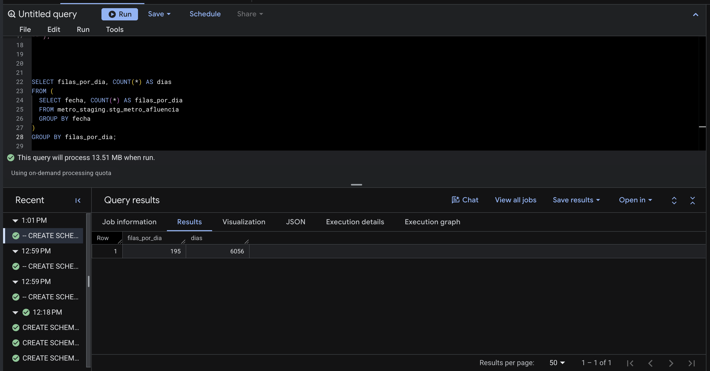
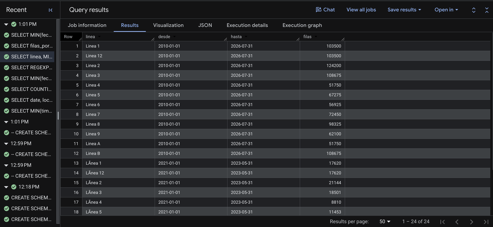
linea para 12 líneas: Linea y LÃnea (2021-01-01 a 2023-05-31)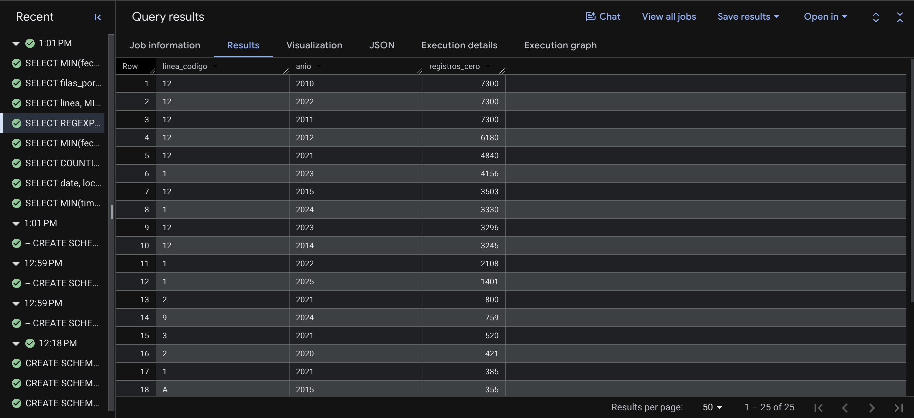
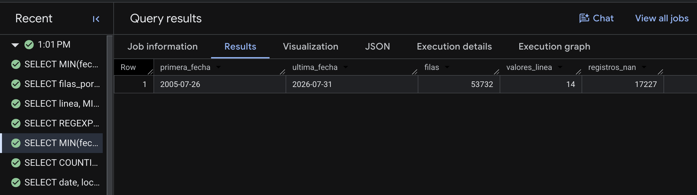
'NaN'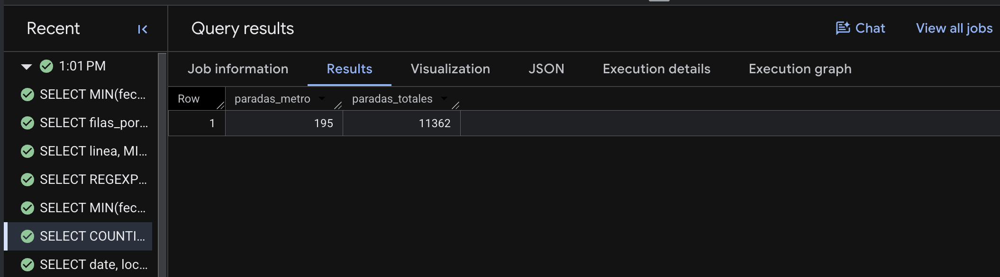
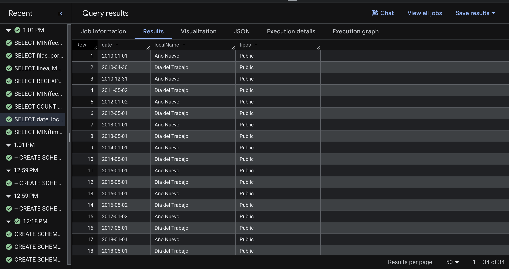
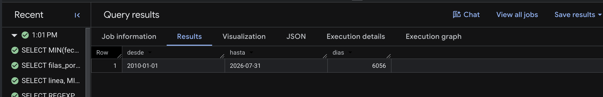
1.5 Análisis de integración
Llaves de unión
| Llave | F1 Metro | F2 Metrobús | F3 GTFS | F4 Festivos | F5 Clima |
|---|---|---|---|---|---|
| Fecha | fecha (texto ISO) |
fecha (texto ISO) |
— (catálogo estático) | date (ISO) |
time (ISO, hora local) |
| Línea | linea: Linea 1 / LÃnea 1 |
linea: Línea 1 / linea 1 |
route_short_name + agency_id |
— | — |
| Estación | linea + estacion (texto) |
— | stop_id, stop_name |
— | — |
La fecha une las cinco fuentes sin conversión de zona horaria, porque F5 se pide en America/Mexico_City. La línea se normaliza a un código (1…12, A, B) que conforma dim_linea para los dos sistemas.
Prueba de unión estación ↔︎ GTFS. Probamos la unión de F1 con F3 tomando el 2026-07-31. Primero corregimos la doble codificación y luego normalizamos acentos y mayúsculas. Con eso, 187 de 195 estaciones (95.9 %) coinciden exactamente con una parada de F3 en la misma línea. Las 8 restantes son nombres compuestos que cada fuente escribe distinto:
| Línea | F1 (afluencia) | F3 (GTFS) |
|---|---|---|
| 2 | Zócalo/Tenochtitlan | Zócalo |
| 3 | Etiopía/Plaza de la Transparencia | Etiopía y Plaza de la Transparencia |
| 3 | Niños Héroes | Niños Héroes y Poder Judicial CDMX |
| 3 | Viveros/Derechos Humanos | Viveros y Derechos Humanos |
| 6 | Ferrería/Arena Ciudad de México | Ferrería y Arena Ciudad de México |
| 6 | La Villa/Basílica | La Villa y Basílica |
| 8 | Garibaldi/Lagunilla | Garibaldi y Lagunilla |
| B | Garibaldi/Lagunilla | Garibaldi y Lagunilla |
Se resolverán con una tabla de equivalencias de 8 filas en E2. El conteo por línea coincide: F1 y F3 tienen las mismas estaciones por línea (L1: 20, L2: 24, L3: 21, L4: 10, L5: 13, L6: 11, L7: 14, L8: 19, L9: 12, L12: 20, A: 10, B: 21).
Diferencias de granularidad
| Fuente | Grano nativo | Cómo entra al DW |
|---|---|---|
| F1 | estación-línea × día | Directo al hecho principal |
| F2 | línea × día | Segundo hecho, con dim_fecha y dim_linea conformadas |
| F3 | parada (sin tiempo) | Atributos de dim_estacion y dim_linea |
| F4 | evento (solo días festivos) | Atributos de dim_fecha; los demás días quedan como no festivos |
| F5 | día, un punto para toda la ciudad | dim_clima, un registro por día |
Problemas anticipados (se documentan, se resuelven en E2)
- Doble codificación UTF-8/Latin-1 en
lineayestacionde F1. Se repara antes de normalizar, porque si no se repara una misma estación genera dos llaves. - Nombres compuestos (8 estaciones). Ninguna fuente conserva la historia de nombres: F3 es una foto de la red a octubre de 2022 y F1 reescribe el nombre actual hacia atrás (Zócalo/Tenochtitlan aparece desde 2010-01-01). Por eso el nombre se trata como atributo sin historia y la SCD tipo 2 de
dim_estacionse reserva para el estado de servicio. - Ceros estructurales frente a ceros operativos. Un cero puede ser una línea no inaugurada, un cierre largo o un cierre de un día. Los cierres largos se modelan como estado de servicio en
dim_estacion. Los de un día quedan marcados cones_registro_ceroen el hecho. 'NaN'como texto en F2. Se convierte aNULL, no a cero, porque no significa “nadie viajó” sino “la línea no existía”.- Festivos desplazados en F4. Nager.Date mueve el Día del Trabajo cuando cae en fin de semana (2010-04-30, 2011-05-02, 2016-05-02, 2021-04-30, 2022-05-02) y hace lo mismo con el Año Nuevo (2010-12-31, 2012-01-02, 2017-01-02, 2021-12-31, 2023-01-02). La Ley Federal del Trabajo (art. 74) no prevé ese desplazamiento, así que el festivo se valida contra la ley y se usa la fecha legal.
- Clima de un solo punto. F5 representa toda la ciudad con una celda de malla, y una tormenta local no aparece. Es una limitación para P4 que se declara en la matriz de trazabilidad.
- GTFS desactualizado. F3 corresponde a la versión del 31 de octubre de 2022. El Metro no ha abierto estaciones desde 2012, así que la lista de 195 sigue completa, pero un cambio de nombre posterior a esa fecha no aparecería en F3. Por eso la tabla de equivalencias se revisa contra F1, que sí es reciente.
- Actualizaciones retroactivas en F1 y F2 (riesgo R2) y reanálisis en F5. Cada carga a staging registra su fecha de descarga.
Referencias
- SEMOVI. Afluencia diaria del Metro CDMX. Portal de Datos Abiertos de la CDMX. https://datos.cdmx.gob.mx/dataset/afluencia-diaria-del-metro-cdmx
- SEMOVI. Afluencia diaria de Metrobús CDMX. https://datos.cdmx.gob.mx/dataset/afluencia-diaria-de-metrobus-cdmx
- SEMOVI. GTFS estático de la Ciudad de México. https://datos.cdmx.gob.mx/dataset/gtfs
- Nager.Date. Public Holidays API. https://date.nager.at · repositorio: https://github.com/nager/Nager.Date
- Open-Meteo. Historical Weather API y licencia. https://open-meteo.com/en/licence
- INEGI. Estadística de Transporte Urbano de Pasajeros (ETUP). https://www.inegi.org.mx/rnm/index.php/catalog/741
- Ley Federal del Trabajo, art. 74 (días de descanso obligatorio).